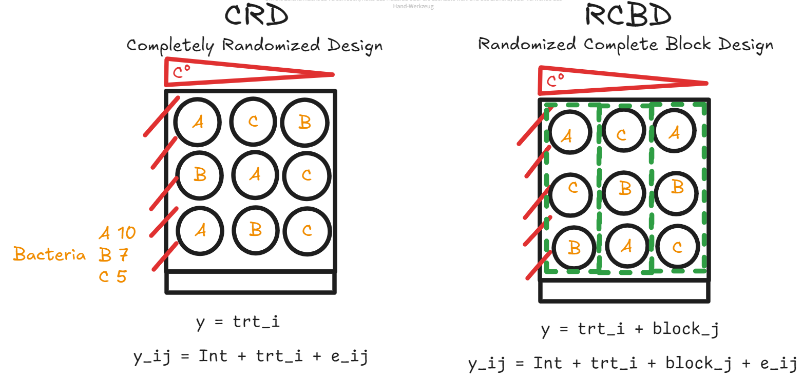
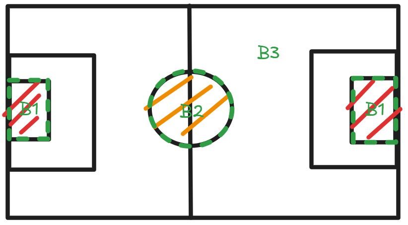
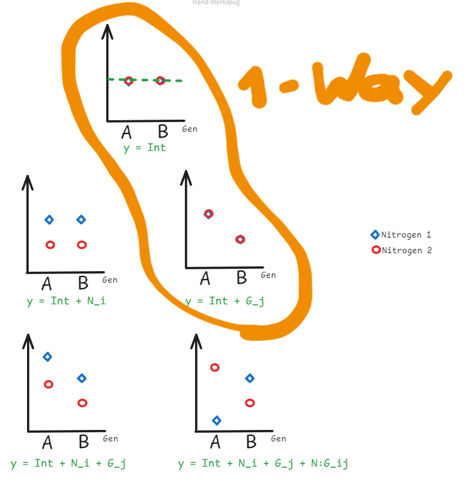

Experiment Design
The Principles of Experiment Design
- Randomization
- Randomize as much as possible
- Replication
- Repeat the experiment on each treatment
- Block
- when necessary
CRD & RCBD Explained using Petri Dishes in a Fridge
Suppose we have a fridge that fits 9 Petri dishes. The fridge is not functioning well and its left part is hotter than its right part (we suppose the temperature difference from left to right is linear). We have three different treatments for a particular bacterium. We need to count how many bacteria grow under each treatment.

Completely Randomized Design (CRD)
In a Completely Randomized Design (CRD), each experimental unit is assigned to a treatment completely at random, without any restrictions or grouping. This design is particularly useful when the experimental units are homogeneous or when the influence of external variables is minimal.
The formula of a linear model following a CRD design pattern is:
\[ y_{ij} = Int + trt_i + e_{ij} \]
Explanation of this formula:
- \(y_{ij}\): The prediction of treatment \(i\) on block \(j\)
- \(Int\): the intercept
- \(tri_i\): the effect of treatment \(i\)
- \(e_{ij}\): error term
In our case (sub-figure on the right), we randomly put each Petri dish into each slot in the fridge, without any grouping. As a result, more Petri dishes with treatment A are placed near the left side. This may cause in biased prediction.
Randomized Complete Block Design (RCBD)
In a Randomized Complete Block Design (RCBD), treatments are randomly assigned within blocks, where each block is a grouping of experimental units that are similar in some way that is important to the experiment. This design is particularly effective in experiments where variability among the experimental units is expected, but can be grouped into relatively homogeneous blocks.
The formula of a linear model following a RCBD design pattern is:
\[ y_{ij} = Int + trt_i + block_j + e_{ij} \]
Compared to the formula of CRD, here we have an additional block effect \(block_j\).
In our case (sub-figure on the right), we divide the slots in the fridge into three regions from left to right. Within each region, the distribution of Petri dishes are random. By doing so we can avoid biased result.
RCBD Blocks are not Necessarily Uniform
RCBD blocks do not have to be the same size or shape. In the following example, the researcher needs to evaluate the performance of football players during a football match. The occurence of the ball is not uniform and there is the following pattern:
- The ball is most likely to appear in the middle of the pitch (B2).
- The second most likely place for the ball to appear is near the penalty area (B1).
- The ball is least likely to appear anywhere else (B3).
Thus the RCBD design on the football pitch is shown as follows:

Two-Way RCBD
Take this experiment as an example. Suppose we have two treatments:
- 2 different genetics (i.e. two different crop species, namely A and B), and
- 2 different nitrogens (blue and red).
We need to find out the best conbination of the genetic and nitrogen that can produce the best yield. By following a Two-Way RCBD design, we can summarize all the possible 5 scenarios as the following illustration:

When we test this design using one-way ANOVA, it only considers the two scenarios that is surrounded by orange line. In order to consider all the possible scenarios, a two-way ANOVA is necessary.